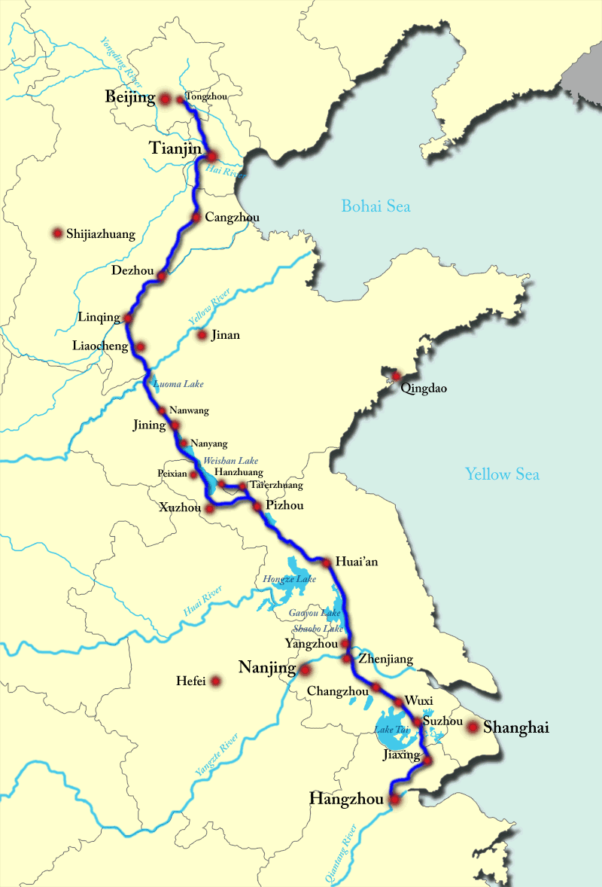

Several facts about me
My name is 李昭洲 (Pinyin: Lǐ Zhāozhōu ). 李 is my surname and literally means plum. 昭 means manifest, illustrious. 洲 means island or continent.
李 (Lǐ) is one of the most common surnames in China, shared by about 100 million people. It is said that my paternal ancestors can be traced back to the great ancient philosopher 老子 (Laozi), the author of 道德经 (Tao Te Ching). However, tracing the maternal side of the family tree is much more challenging, as in many other cultures.
I enjoy taking walks in the city after work. I have a passion for reading, especially science fiction and history. One of my favorite novels is A Deepness in the Sky by Vernor Vinge. While I don't consider myself a hardcore anime enthusiast, I thoroughly enjoy many excellent works. During weekends, I often spend time building small gadgets with Python for fun.
Three stories
While at university in Beijing (2007-2011), I became an active member of an amateur astronomy club and co-organized many stargazing camps and sidewalk astronomy nights with friends. I enjoyed the exclamations of people when they see the moon's surface or Saturn's rings for the first time through our telescopes. This experience made me consider becoming an astronomer, although I'm now more of a theorist than an observer.
In 2008, I served as a disaster volunteer in Pengzhou (a city in Sichuan), aiming to assist villagers in rebuilding their lives and supporting children with their studies after the deadliest earthquake. Many villages in the area were completely devastated. It was during this time, amidst the frequent aftershocks, that I formed many lifelong friendships.
In the summer of 2010, a friend and I cycled 1400 kilometers along the Chinese Grand Canal (大运河), from Beijing (北京) to Jiaxing (嘉兴). During the journey, we spent most nights living in tents. We encountered many beautiful landscapes, but the most unforgettable was the ancient course of the Yellow River in Jiangsu Province, where the greenery appeared like a dream.
